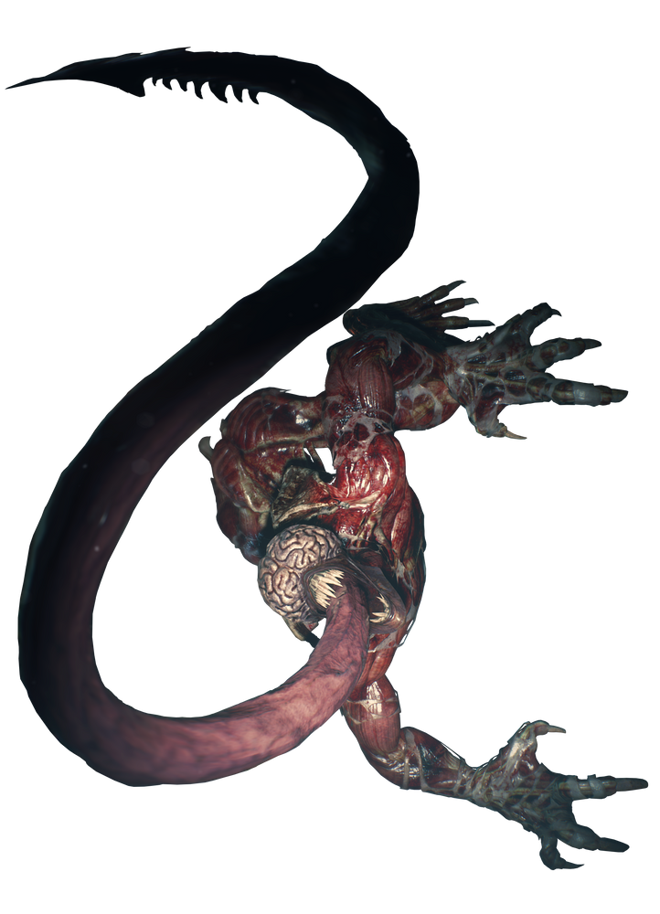

UMBRELLA CORPORATION - CLASSIFIED RESEARCH FILE
FILE ID: BOW-002 | CLEARANCE LEVEL: 3

SUBJECT: T-173 | STATUS: ACTIVE
Bio-Organic Weapon (BOW) — Type C
T-Virus (Advanced Mutation)
MODERATE
Result of advanced T-Virus mutation in human hosts. Brain tissue is fully exposed due to skin deterioration. Completely blind — hunts exclusively through sound and vibration. Moves along walls and ceilings with terrifying agility. Possesses a elongated razor-sharp tongue used as a primary attack.
Entirely blind — silent movement renders subject unable to detect prey. Vulnerable to explosive damage and concentrated gunfire to exposed brain.
Licker subjects represent a significant leap in T-Virus mutation complexity. Their acoustic hunting ability makes them ideal for enclosed facility defense. Recommend deploying in corridor environments. Researchers must maintain strict silence protocols when in proximity.